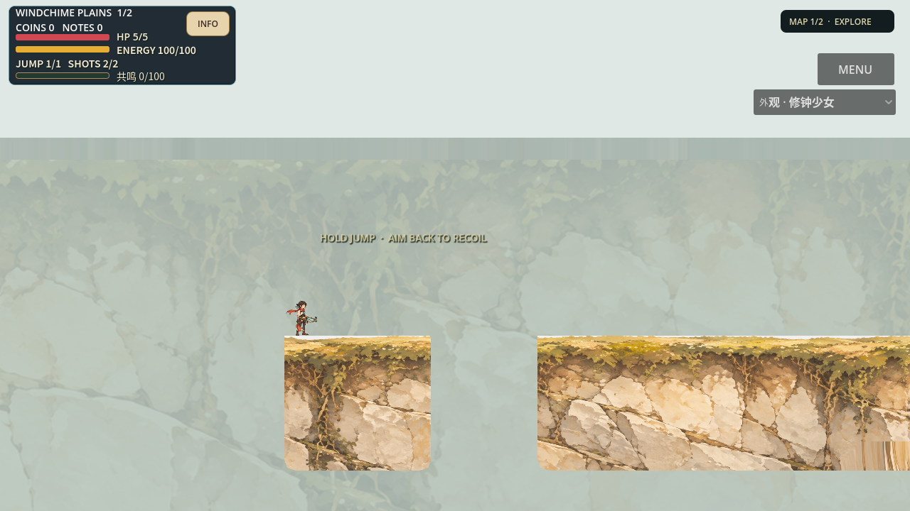

PR85基线。两个Seed使用真正正式整区拓扑，不是预制场所链。两种地貌方法均被独审拒绝，尚不能稳定产出高品质艺术区域。当前画面是失败实录，不是概念图或宣传成品。实现与边界 · 艺术独审 · 恢复入口
这里是原campaign的第一张完整正式大地图（HUD Map1/2），非整局两图或Boss全流程。每张图有20图节点、26无向连接、7个独立环；01/02精确非同构。分别61/60实际模块、13/15敌人、4宝箱及真实Boss。开发期两条路线均实际落地访问17个规定探索节点。Boss战、所有边、真人及设备不在通过声明中。
左：第一方法，浅支撑合并与统一绘画。右：第二方法，真实深岩体扣除路线空腔。原站面/模块平台保留，但新增实体碰撞不同，不能称纯美术等价AB。
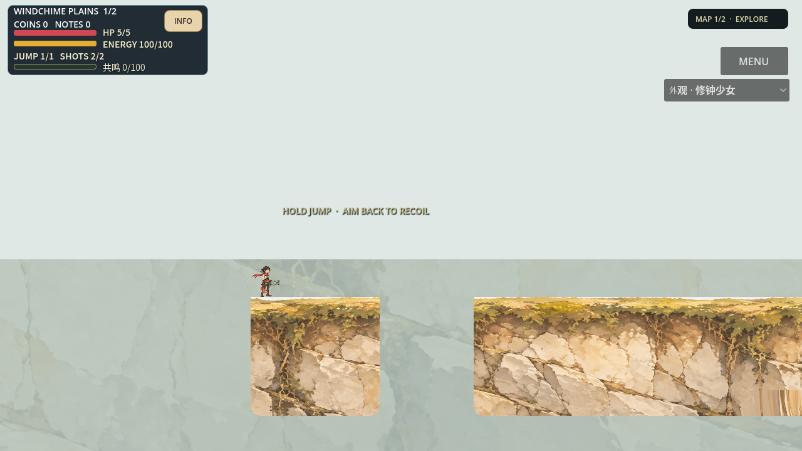
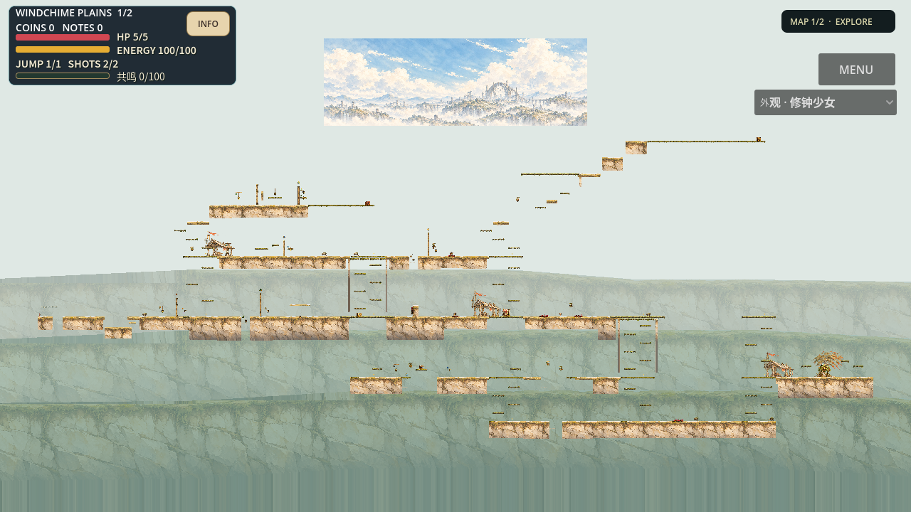
真实计划地貌／拓扑路线／全局景层／根脚诊断SVG（示意投影，非游戏截图；蓝线为声明连接，非全部已遍历）
左：第一方法，浅支撑合并与统一绘画。右：第二方法，真实深岩体扣除路线空腔。原站面/模块平台保留，但新增实体碰撞不同，不能称纯美术等价AB。

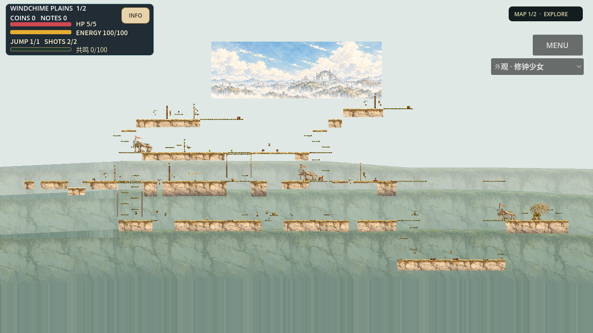
真实计划地貌／拓扑路线／全局景层／根脚诊断SVG（示意投影，非游戏截图；蓝线为声明连接，非全部已遍历）
运行源46c3c099；完整脚距/实际碰撞守门已恢复，艺术仍REJECT。这是同一第二艺术方法的工程修复，不是第三种艺术方案。原始v1截图和失败保留在上方。
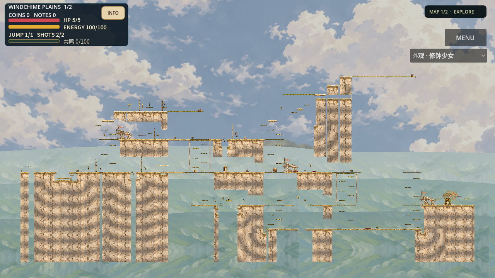
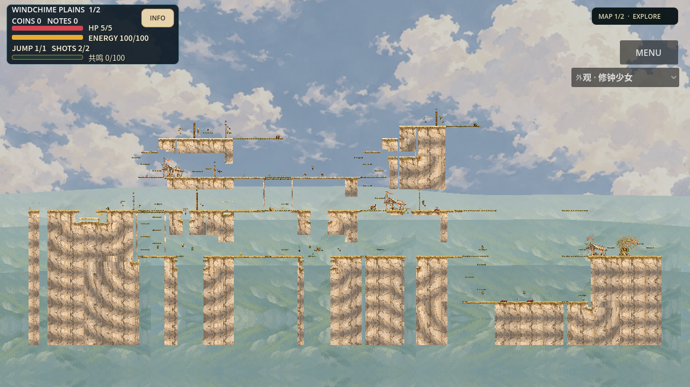
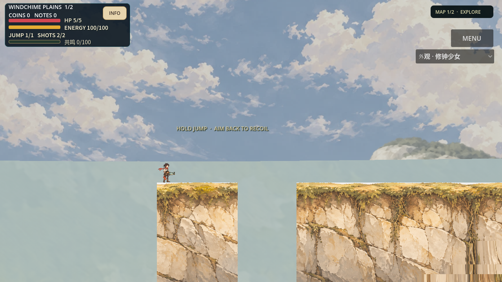
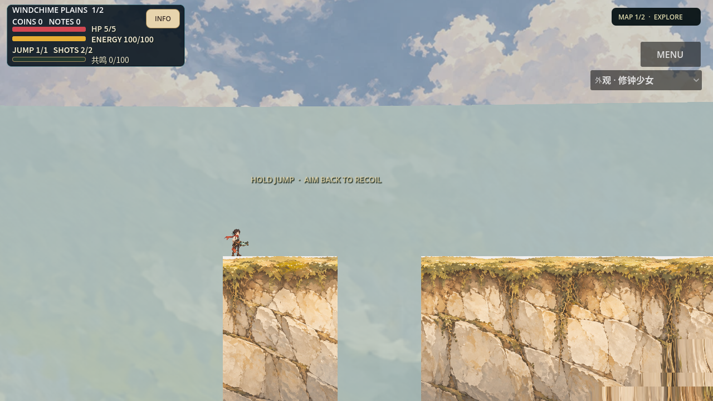
Seed01实际地貌／路线／景层 · Seed02实际地貌／路线／景层 · 限定支撑修复独审 · 51项工具独立复核 · 材质投影限制独审。SVG仅诊断，不代表真实美术或全边已走。
首片已严格封装并复验：完整12495帧／208.25秒，1280×720@60fps，48kHz双声道；原运行源e450，5cb仅后处理恢复。本地完整原片01（158875407字节） · 原片SHA与全部22抽帧绑定 · 实际抽帧独审与最差窗口。原failed回执与AVI保留，恢复不改变原始运行证据。首片仍为缺少后续四脚守门的v1失败候选；5cb第二片在495.235秒主动中止，退出-15，不完整AVI保留。新v2第二片已完成并严格复验：15631帧／260.516667秒，1280×720@60fps、48kHz双声道；运行源46c3c099，实际路线15626tick、17/17规定节点、30次穿越、61枪、零回退。本地完整原片02（190652763字节） · 28实际抽帧与原片SHA。新片16帧独立审查：艺术仍REJECT。Linux试玩与验证：build ac57d1be87f8，226413217字节，精确源46c；包内默认Seed02 headless/GUI及额外Seed01 headless启动已实测，PCK/ZIP SHA不变；包内启动不是整局通关。原60秒检查仍超时，非完整CI/Web发布。
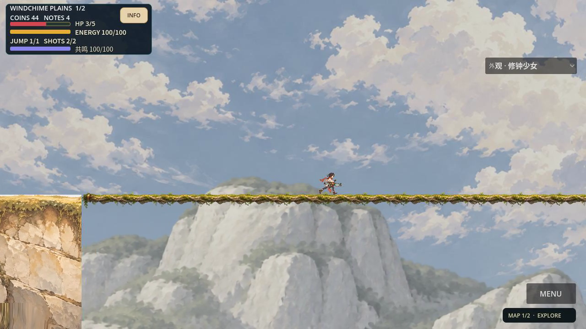
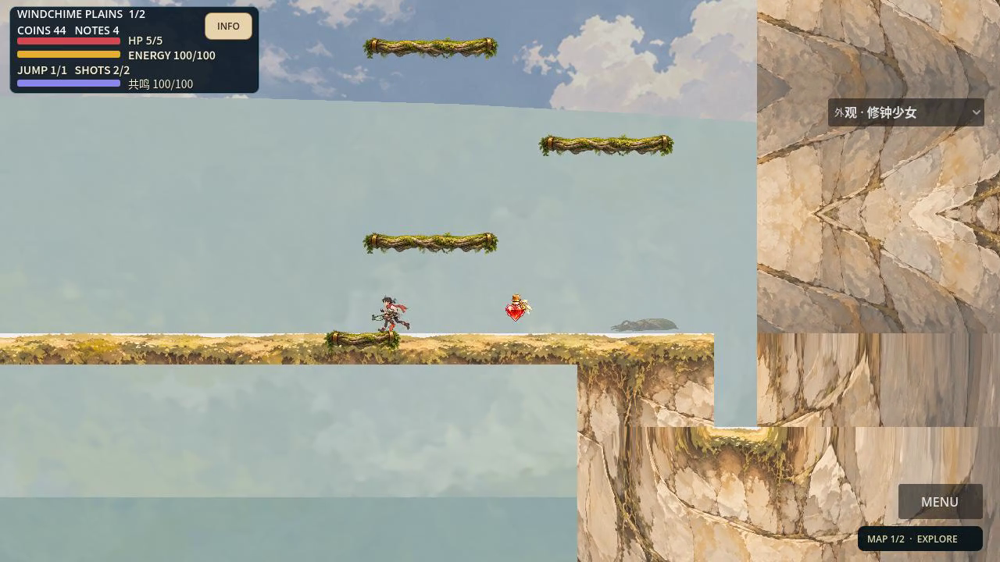
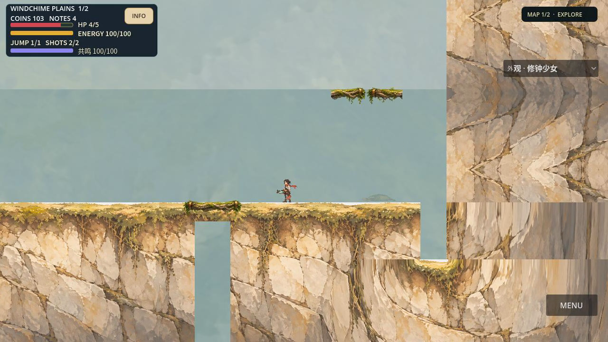
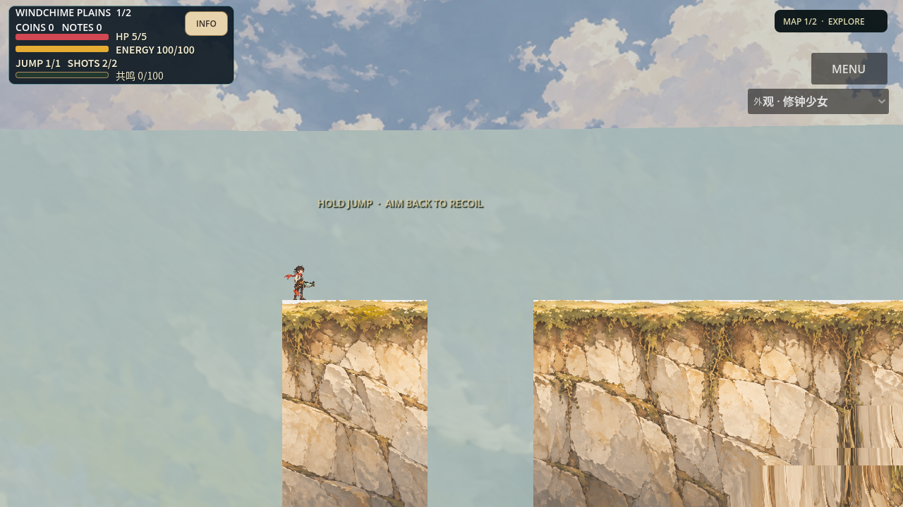
第二方法改善天空和岩体深度，却保留规则立柱、矩形井、重复核心绘画及平行景层。根因是行列玩法布局先固定，地貌只填剩余空间。后续必须联合地貌与路线嵌入；该不同方法尚未实现。无商业黄金、用户风格定稿、实际听音或目标设备认可。
实际两轮源码／失败／原生记录保存在索引；大JSON和失败日志按需解压，不默认放进每个Worker上下文。